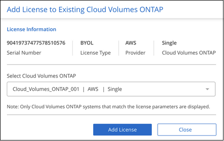
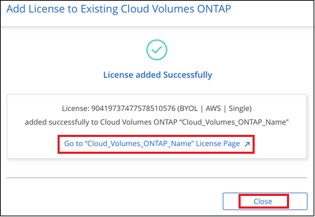

要求變更文件
要求變更文件 編輯此頁面
編輯此頁面 瞭解如何作出貢獻
瞭解如何作出貢獻使用Active IQ 資料功能來管理ONTAP 叢集
Cloud Manager的「Discovery」（探索）頁面會顯示ONTAP 內部部署環境中任何未發現的叢集、無論叢集需要更新磁碟或機櫃韌體、或是您使用Cloud Volumes ONTAP 購買內部部署系統時所授予的所有「功能驗證」授權。此資訊會從提供給Cloud Manager "《數位顧問》 Active IQ"。
檢視未使用Cloud Volumes ONTAP 的以節點為基礎的授權
您ONTAP 購買的許多內部部署的效能不全儲存系統套件、都包含免費Cloud Volumes ONTAP 的以節點為基礎的授權、因此您可以在Cloud Manager中試用NetApp雲端儲存產品。您可以使用授權來建立新Cloud Volumes ONTAP 的版本、也可以將授權套用至現有Cloud Volumes ONTAP 的版本、將容量擴充至368TiB。
您可以根據Cloud Volumes ONTAP NetApp支援網站認證、查看是否有任何未使用的不使用的支援功能。

|
節點型授權的期限自授權發出後的下一個月第一天起開始。例如、如果您在2021年12月15日取得節點型BYOL授權、則授權期間將於2022年1月1日（下個月的第一天）開始。 |
-
在Cloud Manager中、按一下* Discovery （探索）索引標籤。
-
按一下頁面下方的「授權」索引標籤。

每個未使用的授權都會顯示*使用授權*按鈕。
-
如果您要啟動並開始使用授權、請按一下*使用授權*。

請參閱下列工作、瞭解使用可用授權的選項。
使用未使用Cloud Volumes ONTAP 的不使用的功能證
您可以使用未使用的授權來建立新Cloud Volumes ONTAP 的版本、或是在現有Cloud Volumes ONTAP 的版本上擴充授權的容量。授權容量為368TiB。
「Expires」欄位表示使用中授權的最後一天。建立新Cloud Volumes ONTAP 的版次系統時、授權到期日就是此日期。當更新現有Cloud Volumes ONTAP 的更新版時、這表示現有授權的延長時間。
「License Type」、「_Hyperscaler」及「_Model Type」欄位說明Cloud Volumes ONTAP 其所含的「不適用」授權類型。例如、* BYOL |單一| Azure *表示授權是Cloud Volumes ONTAP 「自帶」授權、適用於部署在「Microsoft Azure」中的「單一節點」功能。此欄中可能出現的值會顯示在表格中。
| 欄位 | 價值 |
|---|---|
授權類型 |
PAYGO BYOL |
超大規模擴充 |
Azure AWS GCP所有供應商 |
模型類型 |
單一HA |
建立_全新_ Cloud Volumes ONTAP 的系統時、這是您要部署的系統類型。例如、使用範例授權（* BYOL |單一| Azure *）、您可以在Cloud Volumes ONTAP Azure中建立單節點的不二系統、最多可享有368TiB的權利。此授權無法用於建立HA系統或在AWS中部署執行個體。
當更新_現有_ Cloud Volumes ONTAP 的_系統時、這表示可以擴充現有授權容量的系統類型。再次使用範例授權、您可以為Cloud Volumes ONTAP Azure中的任何單一節點的整套系統延長授權。此授權無法用於擴充HA系統或AWS執行個體的授權。
使用Cloud Volumes ONTAP 未使用的授權建立新的功能
請遵循下列步驟、以Cloud Volumes ONTAP 未使用的授權建立新的版本。
-
按一下「使用授權」、然後選取「使用授權以取得新Cloud Volumes ONTAP 的參考」。
-
在「使用授權…」頁面中、確認授權資訊、然後按一下「使用授權」。
在大多數情況下、您會被引導至*詳細資料與認證*頁面、以建立Cloud Volumes ONTAP 適用於此系統的工作環境、因為雲端供應商和節點數量都是由授權所定義。
如果您使用定義為「All Providers」的授權、系統會將您導向* Choose a Location （選擇位置）頁面、以便在完成* Details & Credentials*（詳細資料與認證）頁面之前、先挑選雲端供應商。
-
請依照步驟建立工作環境和第一個Volume。
請參閱下列章節、視部署Cloud Volumes ONTAP 的是哪家雲端供應商而定。
為現有Cloud Volumes ONTAP 的供應鏈系統擴充授權容量
如果您目前部署Cloud Volumes ONTAP 的不符合任一免費授權（亦即相同的雲端供應商、節點數等）授權要求的功能、您可以依照下列步驟、將授權容量擴充至368TiB。
-
按一下「使用授權」、然後選取「*新增授權至現有Cloud Volumes ONTAP 的Suse *」。

-
在「Add License …（新增授權…）」頁面中、選取Cloud Volumes ONTAP 您要擴充授權的「The Se系統」、然後按一下「* Add License （新增授權）」。
隨即顯示確認對話方塊。

-
您可以按一下「關閉」關閉視窗並返回「探索」頁面、或按一下連結前往Cloud Volumes ONTAP 「更新授權」頁面、以檢視該系統授權的詳細資料。
正在下載新的磁碟和機櫃韌體
您可以查看發現 ONTAP 的任何一個叢集是否需要更新其機櫃或磁碟韌體。您也可以下載Ansible教戰手冊來升級韌體。
*附註：*只有在您訂閱特定支援方案時、才能檢視及下載新韌體。
-
在「Discovery（探索）」頁面中、按一下「韌體更新」索引標籤。
如果有任何叢集需要新的韌體、則會出現*下載全部*按鈕。
-
按一下「下載全部」並儲存壓縮檔。
-
解壓縮此壓縮檔、並參閱下列指示 "更新儲存系統韌體"。
您的韌體已更新。下次當您的SURSHO系統傳送更新訊息給SURGE時、「韌體更新」頁面中的狀態將會更新、以顯示不再需要更新。ONTAP AutoSupport Active IQ
檢視雲端候選的內部工作負載
某些工作負載或磁碟區最適合Cloud Volumes ONTAP 從內部ONTAP 的叢集移至無法使用的系統。其中一些優點包括降低成本、改善效能與恢復能力。「Cloud Ready工作負載」索引標籤提供您所發現ONTAP 之各個叢集的工作負載清單。

本頁列出的支援工作負載包括：SAP、SAP HANA、Oracle、檔案共用和SharePoint。
_lift and shift_是將應用程式移轉至雲端的方法。這表示將應用程式及其相關資料移至雲端平台、而無需重新設計應用程式。如需詳細資訊、請參閱 "起重和換檔"。